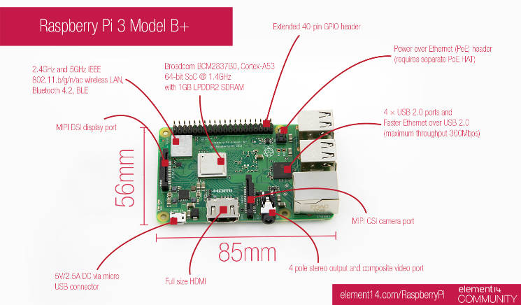

[SWITCHSCIENCE - Raspberry Pi 3 Model B+](https://www.switch-science.com/catalog/3850/)

> cat /etc/os-release PRETTY_NAME="Raspbian GNU/Linux 9 (stretch)" NAME="Raspbian GNU/Linux" VERSION_ID="9" VERSION="9 (stretch)" ID=raspbian ID_LIKE=debian HOME_URL="http://www.raspbian.org/" SUPPORT_URL="http://www.raspbian.org/RaspbianForums" BUG_REPORT_URL="http://www.raspbian.org/RaspbianBugs" > uname -a Linux raspberrypi 4.14.79-v7+ #1159 SMP Sun Nov 4 17:50:20 GMT 2018 armv7l GNU/Linux
> sudo apt-get update -y ... パッケージリストを読み込んでいます... 完了 > sudo apt-get install -y awscli ... python3-rsa (3.4.2-1) を設定しています ... python3-jmespath (0.9.0-2) を設定しています ... python3-dateutil (2.5.3-2) を設定しています ... python3-botocore (1.4.70-1) を設定しています ... python3-s3transfer (0.1.9-1) を設定しています ... awscli (1.11.13-1) を設定しています ... > aws --version aws-cli/1.11.13 Python/3.5.3 Linux/4.14.79-v7+ botocore/1.4.70
Positive : sudo apt-get update -yは必ず実施してください
Negative : Raspberry Piにインストール可能なAWS CLIは最新版でもv1.x系となります
[AWS コマンドラインインターフェイス](https://aws.amazon.com/jp/cli/)
> aws configure AWS Access Key ID [None]: AKXXXXX AWS Secret Access Key [None]: YYYYY Default region name [None]: ap-northeast-1 Default output format [None]: json > > ls -la ~/.aws ... -rw------- 1 pi pi 48 M月 DD HH:MI config -rw------- 1 pi pi 48 M月 DD HH:MI credential
Positive : Shell Script内で実行するAWS CLIで実行する際の権限を設定します
Negative : Access Key, Secret Access Keyは管理者から払い出されたものを設定してください。
> vi ZZZZ.sh > crontab -e # 10分おきに実行 */10 * * * * ZZZZ.sh
Positive : vimの場合、 :wq で保存することになります
#!/bin/bash
# Kinensis Firehoseのストリーム名を設定
streamname=${kinesisn-data-firehose-stream-nama}
while [ 1 ]
do
(
time=`date '+%F %T'`
col1=$(awk -F= '')
col2=$(awk -F= '')
col3=$(awk -F= '')
payload='{\"time\":\"'$time'\", \"col1\":'$col1', \"col2\":'$col2', \"col3\":'$col3'}'
echo $payload
aws firehose put-record --delivery-stream-name $streamname --record="{\"Data\":\"$payload\n\"}"
) &
sleep 15
done
Positive : AWS CLIはGUIと比較して、作業者のスキルに依存せず再現性の高い作業も可能となります
Negative : AWS CLI v2になると入力可能なコマンドの幅が増えるためRaspberry Piで利用可能になったら変更を推奨します